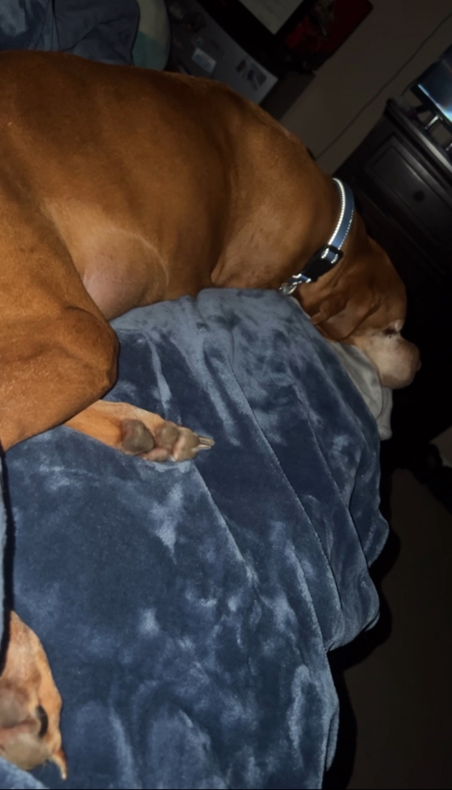
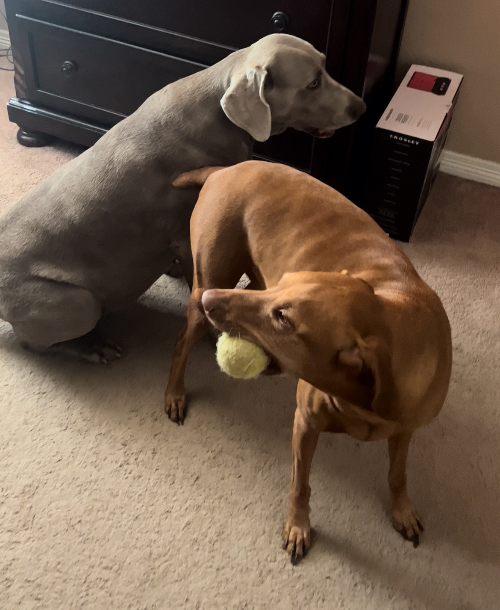
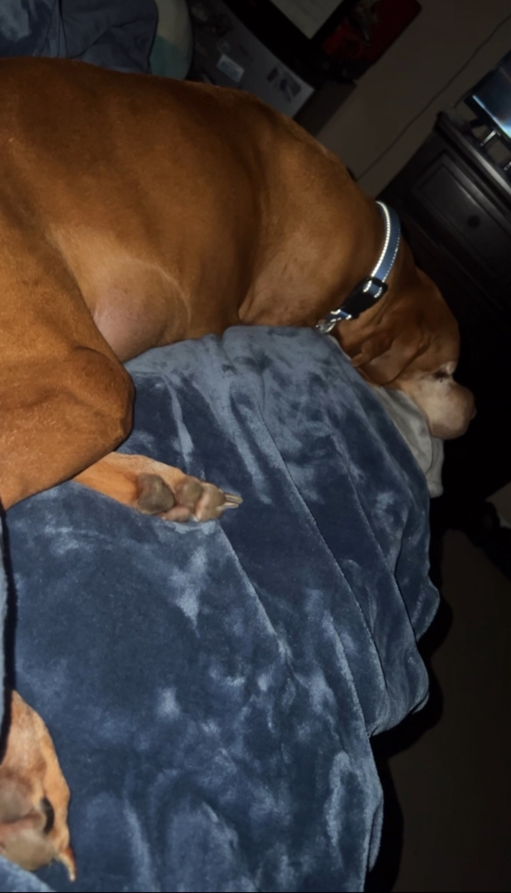
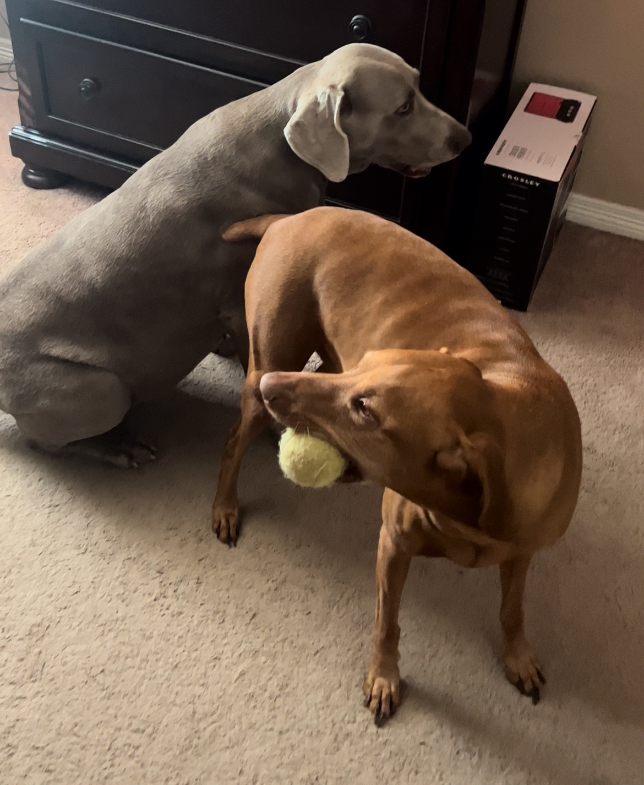

Welcome!
Welcome to my website! I’m Rylan Reasoner, a student-athlete at the University of Indianapolis where I compete as part of the Swimming & Diving team.
Beyond athletics, I’m passionate about computer science and programming. I’m working toward my Bachelor’s degree in Computer Science with a minor in Mathematics and SWEN.
On this site, you’ll find my resume / personal info, projects, and more about me outside of school and sports.
About Me
Outside of academics and athletics, I spend a lot of time exploring technology and entertainment. I enjoy playing online games with friends and exploring VR experiences.
I try to maintain a balance between swimming, school, gaming, and side projects. Each keeps me engaged and pushes me to improve.
Pets Slideshow
 



Projects
Here are some of my projects:
Mock - Rate My Professor: Full Stack
Developed a mock “Rate my Professor” application fully from scratch using phpMyAdmin for database management and HTML/CSS for the front-end. Implemented user authentication, professor profiles, and a dynamic rating system.
Mock - “Shopping” App: Full Stack
Took an existing full stack application and extended it by creating Svelte pages that update dynamically via item index in the URL. Each item displays price, priority, and description, with secure backend modifications through FastAPI inaccessible to front-end users.
Web3D Golf Game
Built a Web3D golf game using THREE.js and A-Frame, featuring a homemade physics engine and collision detection system. Implemented strategic golfing mechanics such as variable ball velocity, trajectory calculation, and obstacle handling. Hosted at rylan1278.github.io/Strategist.
Custom Gemini Web Page
Created a web page that communicates directly with Google Gemini using N8N workflows, API integration, and webhooks. Managed formatting and secure data transfer between frontend and Gemini API endpoints.
Resume / Personal Info
Rylan Reasoner
kade1278@gmail.com (254)-613-3575 975 Ridgeoak Dr., Belton TX, 76513
SKILLS
Computer Skills: C++, C, Python, Arena, MATLAB, Arduino, SQL, PHP, HTML, Javascript, TypeScript, Svelte
LINKS
GitHub: https://github.com/rylan1278
LinkedIn: https://www.linkedin.com/in/rylan-reasoner-7a69a3374/
Portfolio: https://rylan1278.github.io/
EDUCATION
University of Indianapolis – Bachelor’s of Science in Computer Science
August 2024 – Expected May 2028 (Current GPA: 3.9)
Temple College, Temple TX – Associate's Degree
August 2022 – May 2024, Temple Bioscience Institute (GPA: 3.24)
EXPERIENCE / PROJECTS
Mock - Rate My Professor: Full Stack
Developed a mock “Rate my Professor” application fully from scratch using phpMyAdmin for database management and HTML/CSS for the front-end. Implemented user authentication, professor profiles, and a dynamic rating system.
Mock - “Shopping” App: Full Stack
Took an existing full stack application and extended it by creating Svelte pages that update dynamically via item index in the URL. Each item displays price, priority, and description, with secure backend modifications through FastAPI inaccessible to front-end users. Implemented additional functionality for future scalability.
Web3D Golf Game
Built a Web3D golf game using THREE.js and A-Frame, featuring a homemade physics engine and collision detection system. Implemented strategic golfing mechanics such as variable ball velocity, trajectory calculation, and obstacle handling. Hosted at rylan1278.github.io/Strategist.
Custom Gemini Web Page
Created a web page that communicates directly with Google Gemini using N8N workflows, API integration, and webhooks. Managed formatting and secure data transfer between frontend and Gemini API endpoints.
PROFESSIONAL DEVELOPMENT
Tools: Node.js, FastAPI, SvelteKit, Three.js, A-Frame, MySQL, phpMyAdmin, Git, GitHub, Docker, VS Code, JSON, and BASH
Coursework: Data Structures, Algorithms, Database Systems, Computer Architecture, Parallel Computing, GUI & Game Programming, Computer Networks, Distributed Computing, Data Encryption, Network Security, Discrete Mathematics, Linear Algebra, and Calculus I & II
Acer Chromebook Repair - (120 hours)
Completed a 10-hour online course to learn proper Chromebook repair techniques. Successfully repaired over 60 Chromebooks independently, diagnosing hardware and software issues, and performing full component replacements when necessary.
EXTRACURRICULAR ACTIVITIES
University of Indianapolis Swim and Dive – 2024–Expected 2028
Team captain for 8+ years, developing leadership skills, coordinating practices, and mentoring younger swimmers. Organized team events and fostered a competitive yet supportive club environment. Earned accolades including Rookie of the Year (2020) and MVP (2021–2024).